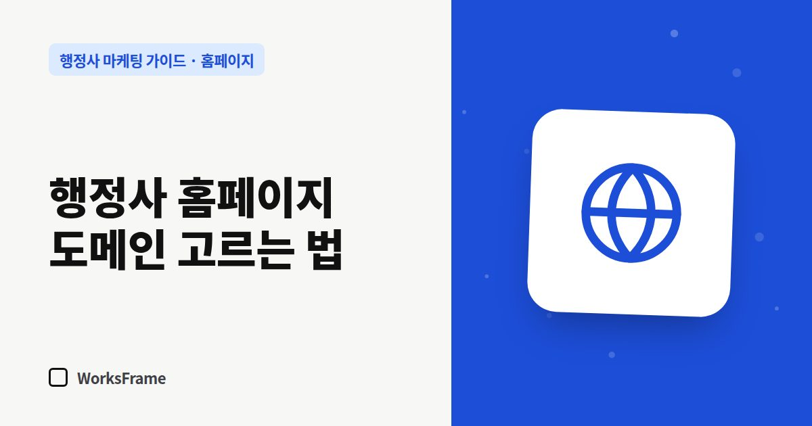

홈페이지
행정사 홈페이지 도메인 고르는 법 — .com, .kr, 한글 도메인
한 줄 답
짧고, 말로 불러도 받아 적을 수 있고, 사무소 이름과 이어지는 주소를 고르세요. 반드시 사무소 명의로 등록하고 자동 갱신을 켜 두세요.

도메인은 한 번 정하면 명함과 간판, 네이버 플레이스, 각종 등록에 들어가서 바꾸기 어렵습니다. 짧게 고민하되 기준을 갖고 고르세요.
좋은 도메인의 조건
- 짧다 — 명함에 넣었을 때 한 줄에 들어가고, 입력하다 틀리지 않는 길이
- 말로 불러도 받아 적을 수 있다 — 철자를 설명해야 하는 단어, 헷갈리는 알파벳(l/1, o/0)은 피하기
- 사무소명과 연결된다 — 이름의 영문 표기나 약자
- 하이픈(-)과 숫자는 되도록 피한다 — 불러 줄 때 설명이 길어집니다
끝자리(확장자) 비교
| 확장자 | 특징 |
|---|---|
| .com | 가장 익숙함, 짧은 이름은 이미 등록된 경우가 많음 |
| .kr | 한국 사무소라는 느낌, 짧게 쓰기 좋음 |
| .co.kr | 국내 기업에 익숙한 형태 |
| 한글 도메인 | 기억하기 쉬우나 공유·입력 환경에 따라 불편할 수 있음 |
검색 순위는 확장자보다 내용이 좌우합니다. 부르기 쉬운 것을 기준으로 고르세요.
등록할 때 주의할 점
- 사무소 명의로 등록 — 제작 업체 명의로 등록되면 나중에 옮길 때 곤란해집니다. (명의가 중요한 이유)
- 자동 갱신과 결제 수단 확인 — 갱신을 놓치면 도메인이 만료되고, 다른 사람이 가져갈 수도 있습니다.
- 관리 계정 정보 보관 — 로그인 아이디와 복구 이메일을 사무소가 알고 있어야 합니다.
- 비용은 보통 1년에 1~3만 원 선입니다(확장자·업체마다 다름).
자주 묻는 질문
원하는 .com이 이미 있으면요?
.kr이나 .co.kr을 먼저 확인하고, 그래도 없으면 사무소명 뒤에 업무나 지역을 붙인 짧은 조합을 찾아보세요.
도메인을 여러 개 사야 하나요?
필수는 아닙니다. 비슷한 주소를 여러 개 사서 한 곳으로 연결하는 방법도 있지만, 처음에는 하나를 제대로 쓰는 것으로 충분합니다.